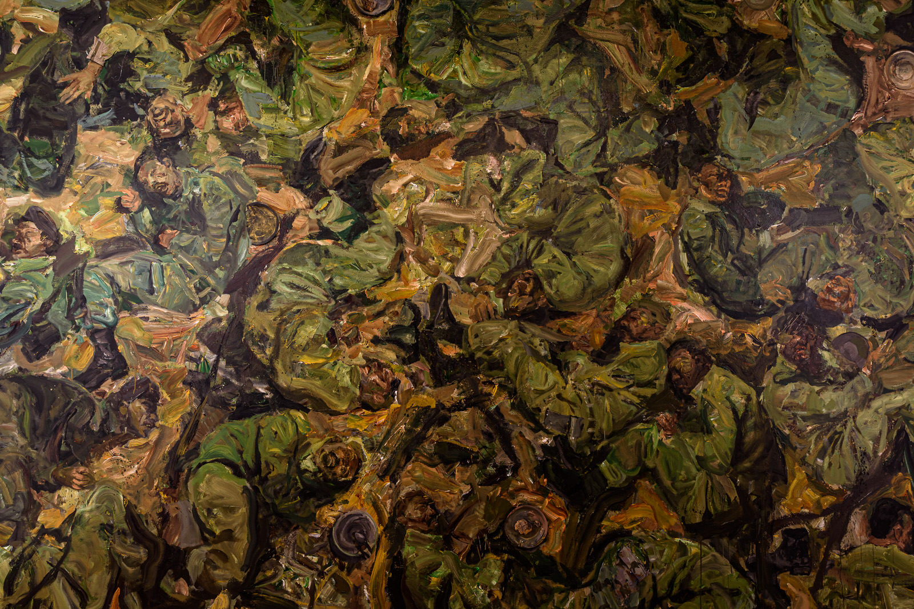

From firsts and comebacks to fighting the odds, Rebecca Anne Proctor selects seven pavilions at the 58th Venice Biennale that represent artists from the Middle East and Africa, and that resonate with our contemporary world.
Saudi Arabia
After Illusion
Zahra Al-Ghamdi
Commissioned by Misk Art Institute
Curated by Eiman Elgibreen
Courtesy: La Biennale di Venezia | Photography by Italo Rondinella
The Kingdom of Saudi Arabia returned to the Biennale after an eight-year hiatus, revealing a fantasy-like realm of “creatures” by artist Zahra Al-Ghamdi. Arranged inside the pavilion are a series of shell-like objects hanging from illuminated screens, and positioned nonchalantly on the ground. Some of them even produce noise when they are squeezed, heard over a sound system. After Illusion mimics the sensation of stepping inside a dream world, and is inspired by a line from an ancient Arabic poem written by Zuhayr bin Abī Sūlmā (520-609), in which he described his struggle to recognise his home after being away for 20 years. It was the illusion that helped him re-identify with his home—an idea very much apt to Saudi Arabia’s recent history and its rapidly changing present. As Al Ghamdi seems to say, illusion will help her country entertain the new, which is just as magical as it is unknown.
UAE
Passages
Nujoom Al Ghanem
Commissioned by the Salama bint Hamdan Al Nahyan Foundation
Curated by Sam Bardaouil and Till Fellrath
Inside the UAE Pavilion is a site-specific video installation entitled Passages, presenting the poetry of Nujoom Alghanem. The two-sided work comprises different narratives shown on either side of the same screen; one pertains to the real, while the other is fictional. Curated by Sam Bardaouil and Till Fellrath, the film bases its narrative off Alghanem’s 2009 poem The Passerby Collects the Moonlight, a story that relays the tale of a displaced woman who is on a remarkable journey of discovery.
The fictional tale shows the passage of Falak, a displaced woman who is on a tumultuous journey of discovery interspersed with beautifully captured landscapes of the UAE, including the sand dunes of the desert and the industrial skyscrapers of Dubai’s continuously growing metropolis. The other side of the screen shows the “real” or authentic story showing the development of Al Ghanem and Amal, a Syrian actress based in Dubai, who plays Falak. Throughout the beautifully captured scenes, lines from Al Ghanem’s poignant verses can be heard, such as: “ […] Fear became my shirt, I opened my arms to it, but instead of embracing me it slipped into my heart. We became each other’s nocturnal companion, surviving on air and sorrow,” from the poem To my friend Hassan Sharif, to his madness and breakdowns.
Ghana
Ghana Freedom
Commissioned by Ministry of Tourism, Arts and Culture of Ghana
Curated by Nana Oforiatta Ayim
Courtesy: La Biennale di Venezia | Photography by Italo Rondinella
Ghana’s first ever pavilion at the Venice Biennale entered with a bang. The West African nation made its foray into the world’s preeminent art event with a line-up of some of the country’s most respected names. The winding paths of the pavilion were designed by Ghanain star architect David Adjaye, providing ample space for a display of each artist’s work. Curated by Nana Oforiatta Ayim and entitled Ghana Freedom, the pavilion offered a taste of the vibrant West African nation not only through art, but also through actual soil shipped from the country and covering the floor.
Courtesy: La Biennale di Venezia | Photography by Italo Rondinella
Ayim, who was advised by the late curator Okwui Enwezor, chose works by photographer Felicia Abban, the female representations of painter Lynette Yiadom-Boakye; the three-channel video Four Nocturnes (2019) by John Akomfrah; a video sculpture by emerging Ghanaian artist Selasi Awusi Sosu, and an installation that opens the exhibition by Ibrahim Mahama entitled A Straight Line Through the Carcass of History (2016-19) and made up of smoked fish mesh, wood, cloth, and archival materials. The title of the exhibition is derived from Ghanain musician E.T. Mensah’s song of the same name, composed on the eve of independence of the nation in 1957. The show, charting the legacies and experiences of this freedom by six artists across three generations, celebrates Ghana’s vivacious creativity and emergence as an artistic centre on the global art stage.
India
Our Time for a Future Caring
Commissioned by India Ministry of Culture and the Confederation of Indian Industry
Curator Roobina Karode
Courtesy: La Biennale di Venezia | Photography by Italo Rondinella
Another Biennale highlight was the return of the Indian pavilion after an eight-year hiatus. Staged with the support of the Kiran Nader Museum, which was responsible for the curation of the exhibition, the commission tapped seven artists to engage with various aspects of the work of peace leader Mahatama Ghandi. Nandalal Bose, Atul Dodiya, GR Iranna, Rummana Hussain, Jitish Kallat, Shakuntala Kulkarni, and Ashim Purkayastha displayed works that explored the ideas of violence and intolerance prevalent in today’s world.
Courtesy: La Biennale di Venezia | Photography by Italo Rondinella
Created in a variety of media, including installation, painting, sculpture, and film, the works also showcased views of modern and contemporary India. Of note was GR Iranna’s multitude of wooden paduka shoes in Naayu (We Together) (2012), referring to Gandhi’s choice of wood slippers as he rejected leather, and the haunting and unforgettable video installation by Jitish Kallat entitled Covering Letter (2012). In it, a screen of mist shows a projected letter that Ghandi sent to Adolf Hitler in July 1939, requesting him to resist “reducing humanity to a savage state.”
Denmark
Heirloom
Larissa Sansour
Commissioned by The Danish Arts Foundation: Lisette Vind Ebbesen (Chair), Peter Land, Jane Jin Kaisen, Charlotte Fogh and Søren Assenholt
Curated by Nat Muller
Courtesy: La Biennale di Venezia | Photography by Francesco Galli
Inside the Danish Pavilion is a haunting exhibition by Danish-Palestinian artist Larissa Sansour, who is represented by Lawrie Shabibi in Dubai. Entitled In Vitro and curated by Nat Muller, the work is a black and white film set in the town of Bethlehem decades following an ecological disaster. Two female protagonists—an older leader from the previous generation and her successor, a younger woman who turns out to be a clone of the elderly woman’s daughter who died in the apocalypse—meet to decide the fate of the next generation.
The struggle revolves around memory, and the film, which is largely sci-fi in nature, probes the question: is it necessary to hold on to memories in order to move forward? The film wrestles with ideas surrounding fiction and reality. What is really real, and how much does our memory dictate what is real? Sansour, who grew up in Bethlehem, bases these ideas on Palestine and the pain of a people who struggle with loss, grandiose ideas of a future utopia, and how to maintain one’s identity in the face of change. The film, as Muller states, also questions the future. “Is your future the past or is it something else? Are you going to let the past define your future?” she asks. In an adjacent space, a large gong provides the viewer with a meditative ending after the contemplation of profound questions.
Iraq
Fatherland
Serwan Baran
Commissioned by Ruya Foundation
Curated by Tamara Chalabi and Paolo Colombo
Courtesy: La Biennale di Venezia | Photography by Andrea Avezzù
“Iraq has been at war for 47 years, and I am 51 years old,” says Beirut-based Iraqi-Kurdish artist Serwan Baran. “I want visitors to feel shocked as they enter the exhibition, and to understand what it means to have lived a lifetime of relentless conflict.” Baran served as a soldier and war artist in the Iraqi army during the Iran-Iraq war and the first Gulf war. He addresses his military experiences with two new commissions for Fatherland.

Courtesy: La Biennale di Venezia | Photography by Andrea Avezzù
In the first room, the cracked resin sculpture The Last General (2019) depicts the decomposing corpse of a heavily lauded general. Baran has portrayed him in the same way that he was encouraged to depict generals while he was in the army — “as invincible strongmen.” In another room is one of the more haunting works, The Last Meal (2019). In it, a field of soldiers, their bodies intertwined and coloured in green and brown, are seen having meal. It’s a time when they are at their most vulnerable, only because they have stopped to fulfil a basic need. These works, expressionistic and highly graphic, demonstrate men driven by the need to wage war out of competition and defence of their fatherland.
IRAN
Of Being and Singing
Reza Lavassani, Samira Alikhanzadeh and Ali Meer Azimi
Commissioned by Hadi Mozafari and Mahdi Afzali
Curated by Ali Bakhtiari
Courtesy: La Biennale di Venezia | Photography by Andrea Avezzù
Against the odds and the mounting US sanctions on Iran, the country staged a pavilion of works by three Iranian artists aimed at showcasing messages of peace. Entitled Of Being and Singing and curated by Ali Bakhtiari, each of the three artists’ works represents a different moment in time: the past, the present, and the future.
Courtesy: La Biennale di Venezia | Photography by Andrea Avezzù
On display is a monumental work by Reza Lavassani called Life (2012), which depicts a long banquet table in papier-mâché with a variety of domestic objects focusing on the passage of time. There’s then the works Samira Alikhanzadeh produced under the title The Rigid Phantom of Memory, portraying four unknown women from vintage family images transferred to feminine metal dresses. Their haunting faces stare out at the viewer and probe questions related to identity and memory, as well as the various roles that a woman must fulfill inside and outside the home in her private and public sphere. The third artist is Ali Meer Azimi, the youngest Iranian to be represented in the Venice Biennale to date. His work, Always Already: To Sink Into Lip Sync, offers an experimental approach to art creation inspired by cinema and philosophy. His interactive piece is a multi-disciplinary study on how phonemic language is acquired between human children and finches or small birds.
What was of importance to Bakhtiari was to evoke a message not just about the contemporary Iranian art scene, but one of peace during a challenging time for the country.
About Rebecca Anne Proctor:
Rebecca Anne Proctor is the Editor-in-Chief of Harper’s Bazaar Art and Harper’s Bazaar Interiors, a role she has held since 2015. She has written prolifically for publications including The New York Times Style Magazine, Bloomberg Businessweek, Canvas, Artnet News, Frieze, BBC, Galerie, The National and The Business of Fashion, as well as written several art catalogues on Middle Eastern art and culture.
 Larissa Sansour’s film In Vitro, which is largely sci-fi in nature, probes the question: is it necessary to hold on to memories in order to move forward?
Larissa Sansour’s film In Vitro, which is largely sci-fi in nature, probes the question: is it necessary to hold on to memories in order to move forward?